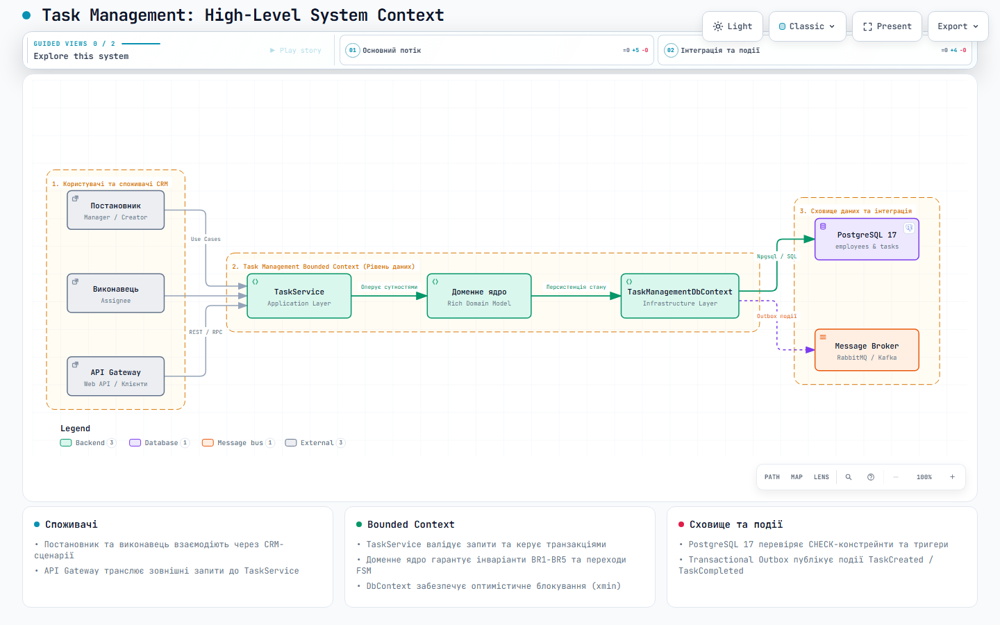
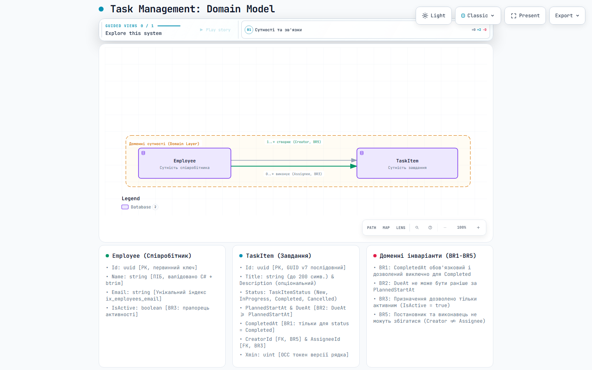
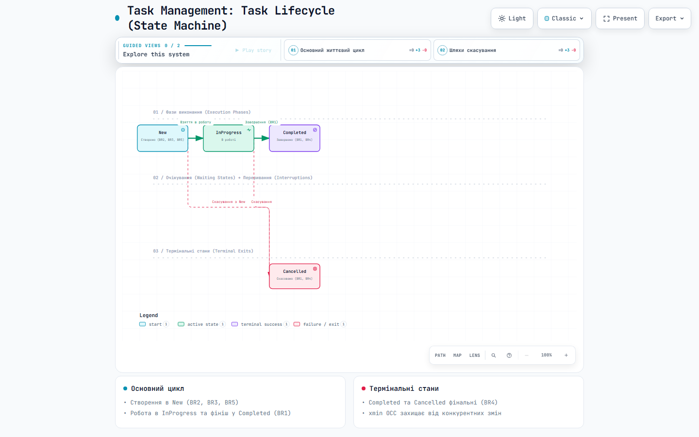
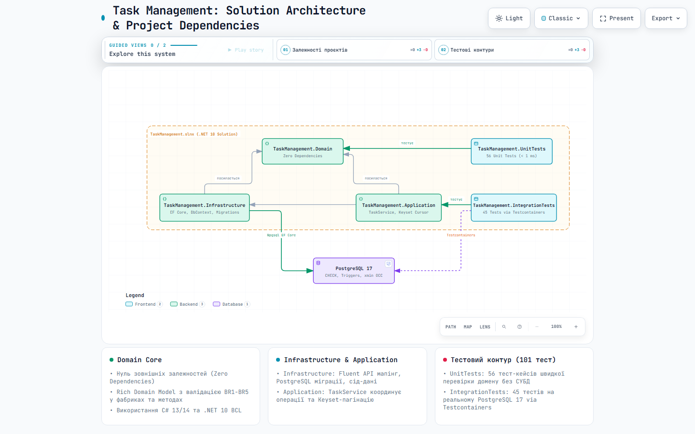
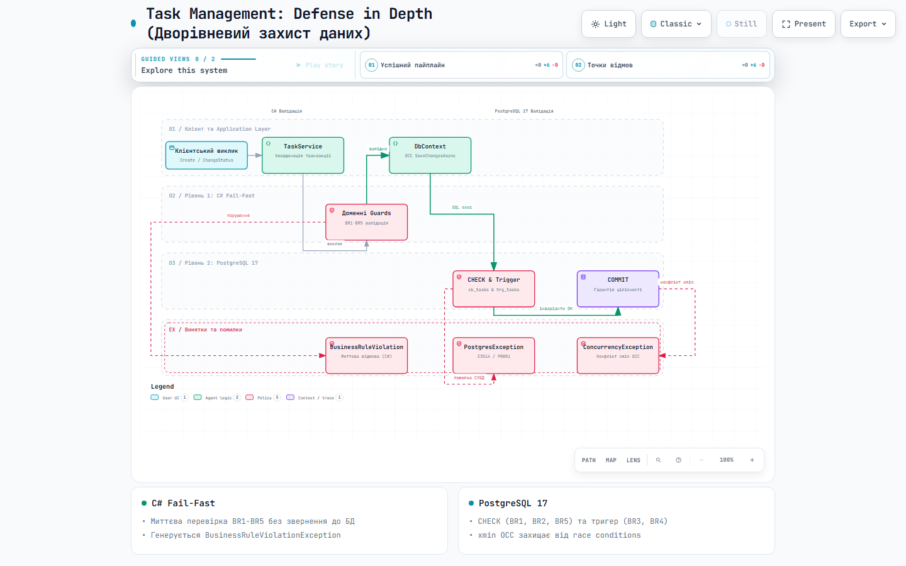
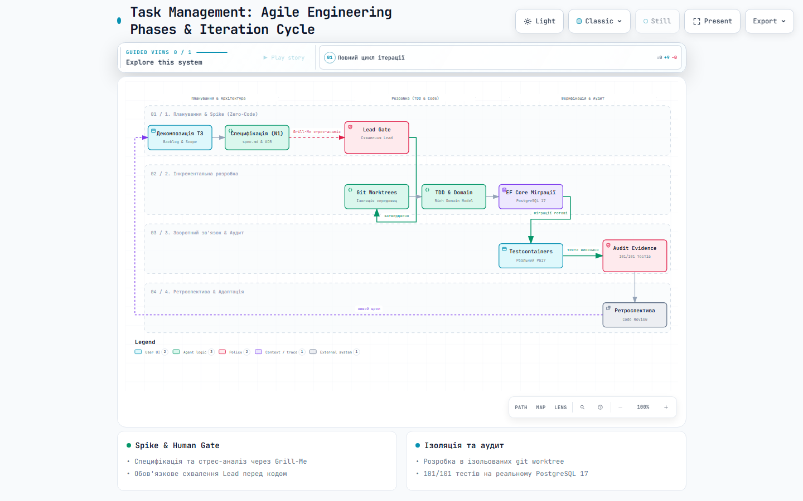

Архітектурні діаграми Archify стандарту --quality showcase для проєкту Task Management (PostgreSQL + EF Core).

Споживачі CRM (Manager, Worker, API Gateway), Task Management Bounded Context, доменне ядро, EF Core та інтеграція зі сховищем.
Відкрити інтерактивну діаграму →
Сутності Employee та TaskItem, зв'язки (Creator, Assignee) та інваріанти бізнес-правил BR1–BR5.
Відкрити інтерактивну діаграму →
Кінцевий автомат станів (New, InProgress, Completed, Cancelled), правила переходів та термінальні інваріанти BR1/BR4.
Відкрити інтерактивну діаграму →
Структура 5 проєктів (Domain, Infrastructure, Application, UnitTests, IntegrationTests) та зв'язки з Testcontainers.
Відкрити інтерактивну діаграму →
Пайплайн захисту даних: мілісекундний C# Fail-Fast та залізобетонна цілісність PostgreSQL 17 (CHECK, тригери, OCC).
Відкрити інтерактивну діаграму →
Agile-цикл: планування & спайк (Zero-Code, Grill-Me, Human Gate), інкрементальна розробка (TDD, worktrees) та аудит.
Відкрити інтерактивну діаграму →